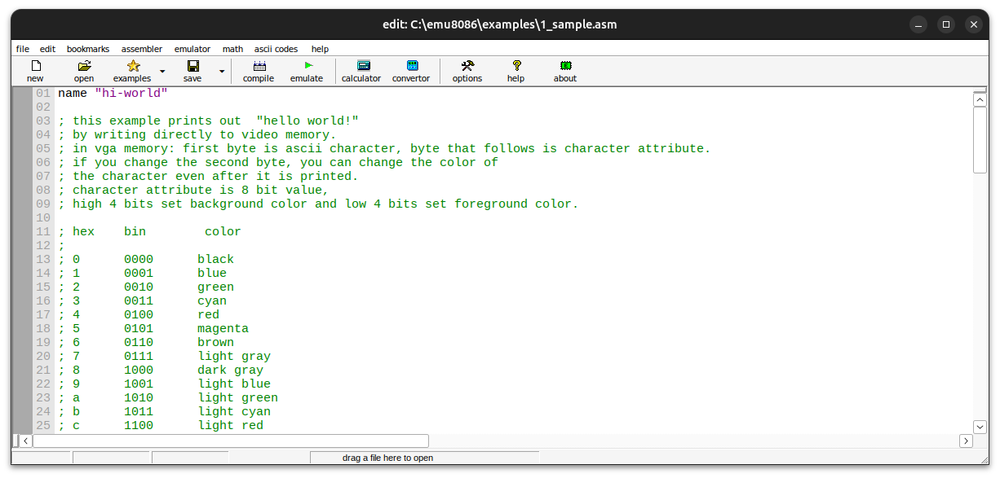
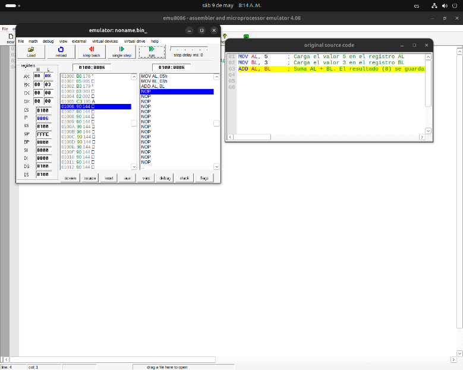
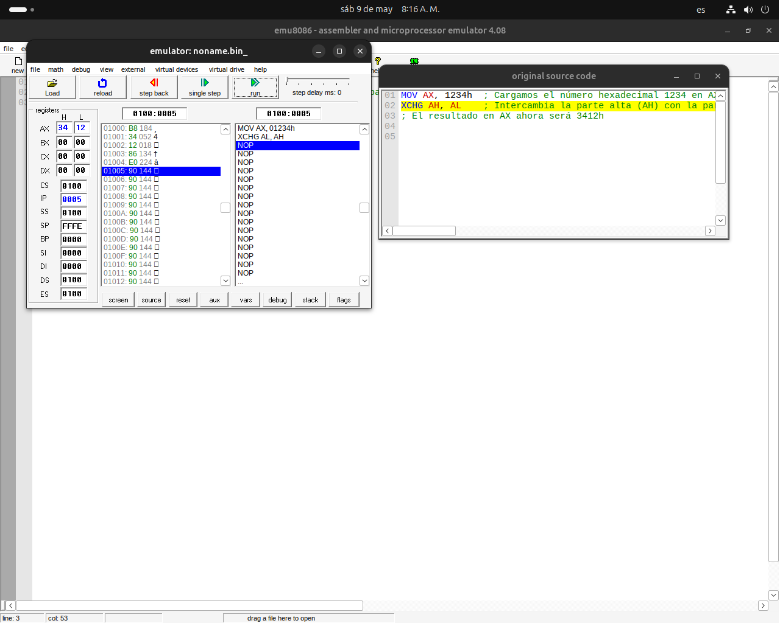
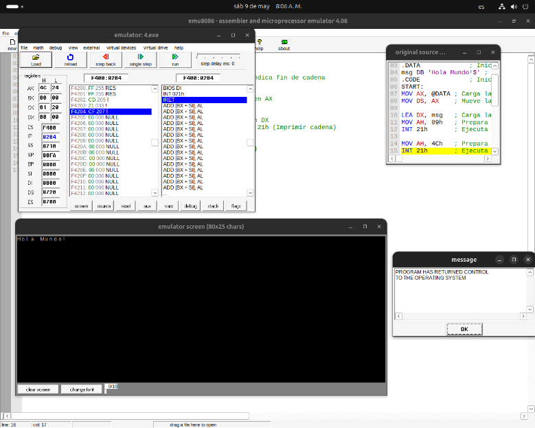
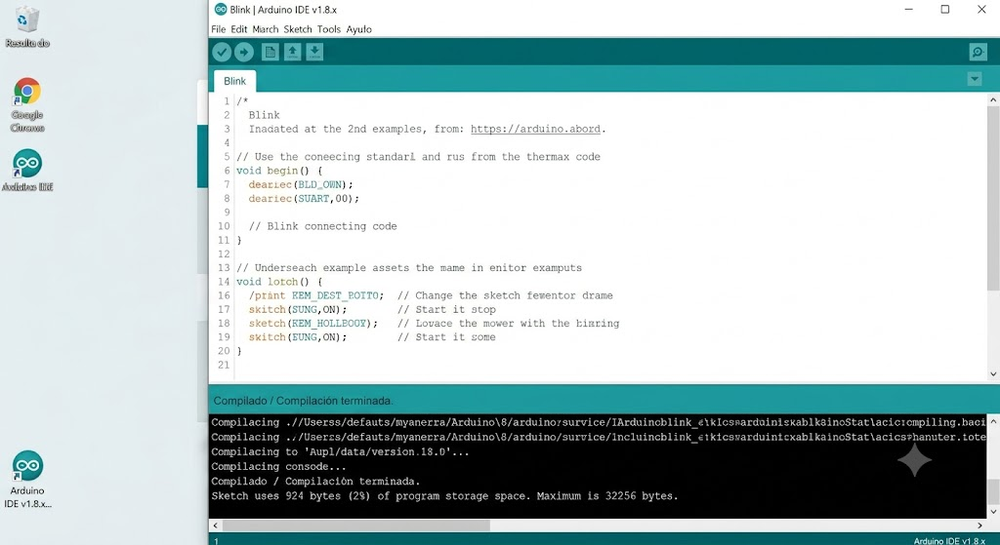
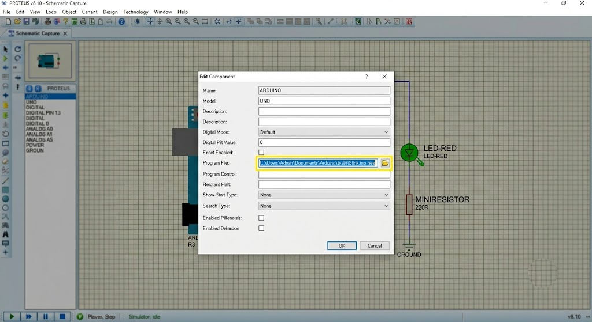
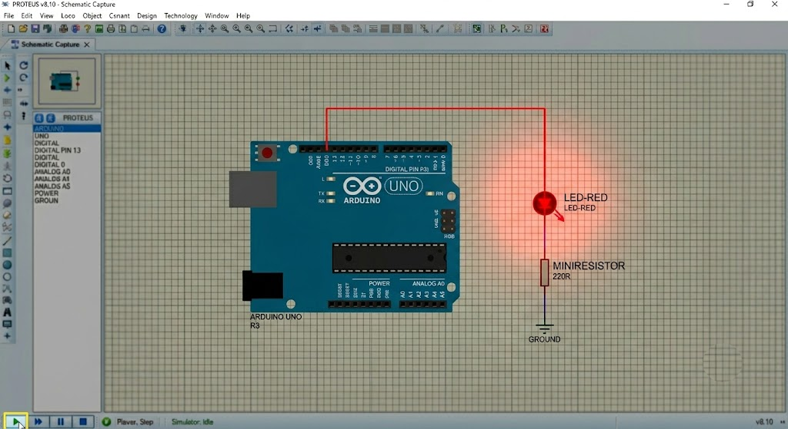
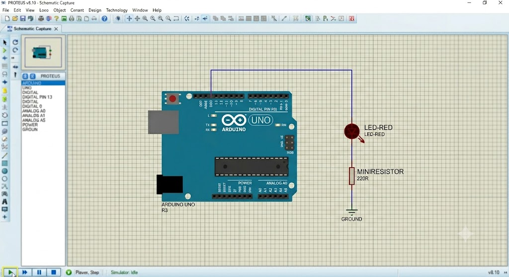

Mapa de Ramificaciones del Proyecto
Haz clic en los nodos de la constelación para iniciar el viaje del pulso a lo largo de las ramas del tronco.
Arq.
Máq.
Mendell Parrales
Unidad I: Introducción a los Microprocesadores y Microcontroladores
1. Conceptos de Arquitectura y Organización de Computadoras
Es crucial comprender las dos capas fundamentales en el diseño de un sistema informático:
Arquitectura
Consiste en los atributos del sistema que son **visibles para el programador** y que tienen un impacto directo en la ejecución del código.
- Conjunto de instrucciones (ISA).
- Representación de datos (bits).
- Mecanismos de direccionamiento.
Organización
Consiste en las **unidades operativas de hardware** y sus interconexiones físicas que implementan las especificaciones arquitectónicas de forma transparente.
- Señales físicas de control.
- Interfaces de memoria y buses.
- Tecnología de circuitos integrados.
2. Estructura y Función
La computadora se analiza a través de dos aspectos operacionales:
Procesamiento (CPU)
Lleva a cabo las funciones de procesamiento lógico y aritmético de datos. Compuesto por registros, UC y ALU.
Sistema de Memoria
Almacena temporal o permanentemente los programas y datos en ejecución. Estructurado en jerarquía.
Sistema de Entrada / Salida
Mueve datos entre la CPU y los dispositivos periféricos externos (teclado, pantallas, sensores).
Unidad II: Arquitectura del Microprocesador
1. Estructura de Von Neumann y Buses Externos
La arquitectura Von Neumann se basa en el principio de almacenar datos e instrucciones de programa en el mismo bloque unificado de memoria física, compartiendo el mismo bus.
CPU
Memoria Unificada
Unidad III: Programación del Microprocesador ix86
1. Estructura de Registros ix86
El procesador Intel 8086 organiza sus registros internos de 16 bits en:
| Categoría | Registro | Descripción del Uso |
|---|---|---|
| Datos / Propósito General | AX, BX, CX, DX | Acumulador, Base, Contador (LOOP) y Datos de E/S. |
| Índices y Punteros | SP, BP, SI, DI | Stack Pointer, Base Pointer, e índices de origen/destino. |
| Segmentación de Memoria | CS, DS, SS, ES | Code, Data, Stack y Extra segments para direccionamiento de 1MB. |
Unidad IV: Arquitectura de los Microcontroladores
1. Harvard vs Von Neumann
Arquitectura Harvard
Utiliza buses físicos y espacios de memoria separados para las instrucciones de programa y los datos, permitiendo accesos simultáneos a gran velocidad.
Arquitectura Von Neumann
Utiliza una única memoria física unificada y un solo bus para transportar tanto los datos de variables como las instrucciones de código de forma secuencial.
2. Filosofías de Juego de Instrucciones: CISC vs RISC
Los procesadores y microcontroladores se estructuran bajo dos filosofías fundamentales:
| Característica | CISC (Complex Instruction Set) | RISC (Reduced Instruction Set) |
|---|---|---|
| Instrucciones | Amplio catálogo (100-300+). Complejas y de longitud variable. | Reducido catálogo (30-80). Simples y de longitud fija (1 ciclo). |
| Decodificación | Por microcódigo en hardware muy complejo. | Decodificación directa por hardware cableado veloz. |
| Acceso a Memoria | Múltiples instrucciones acceden directamente a RAM. | Solo instrucciones LOAD y STORE acceden a RAM; resto en registros. |
| Ejemplos | Intel x86 (computadoras personales), AMD. | PIC de Microchip, ARM (smartphones, embebidos), RISC-V. |
3. Componentes Integrados de un Microcontrolador (µC)
A diferencia de un microprocesador que requiere chips externos, el microcontrolador es un sistema completo integrado en un solo encapsulado de silicio:
Memoria Flash (ROM)
Almacena de forma no volátil el código del programa compilado para que se mantenga al apagar el sistema.
Memoria RAM
Almacena las variables temporales y registros de estado durante el funcionamiento activo.
Periféricos de E/S
Puertos de entrada/salida digital (GPIO), Convertidor Analógico-Digital (ADC) y Temporizadores (Timers).
Unidad V: Programadores del Microcontrolador
1. Entornos del Microcontrolador
El flujo de diseño combina la compilación en MPLAB X (C/Ensamblador) para generar el ejecutable binario `.hex` que luego se inyecta en el simulador electrónico PROTEUS para su depuración.
2. Nemónicos más comunes en Microcontroladores PIC
El lenguaje ensamblador de los microcontroladores PIC (arquitectura RISC de Microchip) consta de un conjunto reducido de instrucciones (usualmente 35 para la gama media):
| Nemónico | Significado | Descripción Breve |
|---|---|---|
| BSF f, b | Bit Set File | Pone en estado alto (1 lógico) el bit 'b' del registro 'f'. |
| BCF f, b | Bit Clear File | Pone en estado bajo (0 lógico) el bit 'b' del registro 'f'. |
| MOVLW k | Move Literal to W | Carga el valor constante 'k' en el registro de trabajo acumulador (W). |
| MOVWF f | Move W to File | Copia el contenido del registro de trabajo W en el registro 'f'. |
| BTFSS f, b | Bit Test File Skip if Set | Prueba el bit 'b' de 'f', y se salta la instrucción siguiente si es '1'. |
3. Directivas de Ensamblador
Las directivas no generan código binario ejecutable directamente. En su lugar, dan órdenes específicas al ensamblador (compilador) durante el proceso:
EQU (Equate)
Asigna un nombre simbólico a una constante de datos o dirección de memoria (ej. `PORTB EQU 0x06`).
ORG (Origin)
Define la dirección física de la memoria del programa donde se colocará el código a continuación.
Sub-Rama III-A: Modos de Direccionamiento e Instrucciones ix86
1. Modos de Direccionamiento en Intel 8086
Los modos de direccionamiento especifican la forma en que el procesador calcula la dirección física del operando con el que va a trabajar:
| Modo | Descripción | Ejemplo en Ensamblador |
|---|---|---|
| Inmediato | El operando constante se encuentra especificado en la propia instrucción. | MOV AX, 0005h |
| Registro | Los datos sobre los que se opera se localizan en los registros internos del microprocesador. | MOV AX, BX |
| Directo | La instrucción contiene directamente la dirección física de la memoria donde está el operando. | MOV AX, [1234h] |
| Indirecto por Registro | La dirección de memoria está almacenada en un registro de base o índice (BX, BP, SI, DI). | MOV AX, [BX] |
2. Repertorio de Instrucciones Básicas
Las instrucciones del 8086 se dividen en diferentes categorías según su función operativa:
Transferencia de Datos
Permiten mover datos de un lugar a otro sin alterarlos.
MOV dest, orig(Copiar datos).PUSH / POP(Operaciones de pila).
Aritméticas y Lógicas
Realizan cálculos matemáticos y comparaciones booleanas.
ADD / SUB(Suma y resta).INC / DEC(Incrementar y decrementar).AND / OR / XOR / NOT(Operaciones de bits).
Sub-Rama IV-A: Detalles de la Arquitectura del Microcontrolador PIC16F877A
1. Ciclo de Instrucción Máquina (Q-Cycles)
En los microcontroladores PIC, el oscilador principal se divide internamente por 4 para generar el reloj interno del procesador. Cada ciclo de instrucción consta de cuatro ciclos de reloj internos denominados **Q1, Q2, Q3 y Q4**:
Decodificación
Se lee la instrucción del bus de código y se decodifica en la UC.
Lectura de Datos
Se lee el operando o registro de la memoria RAM de datos.
Procesamiento
La ALU procesa la información aplicando la operación lógica/aritmética.
Escritura
Se escribe el resultado de vuelta en el registro destino.
2. Organización de la Memoria de Datos (Bancos)
El PIC16F877A divide su memoria de datos RAM en **4 bancos** (Banco 0 a Banco 3) de 128 bytes cada uno. Para acceder a registros ubicados en distintos bancos, es necesario configurar los bits de selección de banco **RP0** y **RP1** en el registro **STATUS**:
| Banco | RP1:RP0 | Registros Clave de Ejemplo | Propósito |
|---|---|---|---|
| Banco 0 | 00 | PORTA, PORTB, PORTC, PORTD, PORTE | Permiten leer o escribir los valores de voltaje físico en los pines. |
| Banco 1 | 01 | TRISA, TRISB, TRISC, TRISD, TRISE, ADCON1 | Configuración de dirección (1=Entrada, 0=Salida) y modo del ADC. |
| Banco 2 | 10 | EEDATA, EEADR, EEDATH | Acceso a la memoria EEPROM de datos interna. |
| Banco 3 | 11 | EECON1, EECON2 | Registros de control de escritura y borrado para la EEPROM/Flash. |
Sub-Rama V-A: Detalles de Compilación y Palabra de Configuración (Fuses)
1. La Palabra de Configuración (Fuses)
Los Fuses son registros especiales que se configuran únicamente al momento de grabar el código binario en el chip. Definen el comportamiento del hardware antes de ejecutar el programa principal:
Oscillators (OSC)
Selecciona el tipo de reloj externo. **HS** (High Speed Crystal, >4MHz), **XT** (Cristal estándar, <4MHz), o **RC** (Resistencia-Capacitor económico).
Watchdog Timer (WDT)
Temporizador de seguridad ("Perro guardián") que reinicia automáticamente el chip si el programa se queda congelado en un ciclo infinito.
Power-up Timer (PWRTE)
Retrasa el inicio de la ejecución por unos milisegundos tras energizar el chip para asegurar que el voltaje de alimentación sea estable.
Low Voltage Programming (LVP)
Permite programar el chip con 5V en vez de los 13V estándar en el pin MCLR, a cambio de deshabilitar un pin digital.
2. Estructura de Plantilla Ensamblador (MPLAB X)
Plantilla típica para configurar los puertos de salida y ciclar un parpadeo de LED:
LIST P=16F877A
INCLUDE "P16F877A.INC"
; Configuración de Fuses
__CONFIG _CP_OFF & _WDT_OFF & _BODEN_OFF & _PWRTE_ON & _XT_OSC & _WRT_OFF & _LVP_OFF
ORG 0x00 ; Vector de Reset
GOTO Inicio
ORG 0x05 ; Inicio de Programa
Inicio:
BSF STATUS, RP0 ; Cambiar a Banco 1
BCF TRISB, 0 ; Configurar Pin RB0 como Salida
BCF STATUS, RP0 ; Volver a Banco 0
BuclePrincipal:
BSF PORTB, 0 ; Encender RB0
; ... Llamado a Subrutina de Retardo ...
BCF PORTB, 0 ; Apagar RB0
; ... Llamado a Subrutina de Retardo ...
GOTO BuclePrincipal
END ; Fin de ArchivoTutorial de Programación en emu8086
Paso 1: Escribir el Código en el Editor
El primer paso consiste en abrir el entorno emu8086, crear un nuevo archivo de plantilla `COM template` y escribir el código fuente en ensamblador de la familia ix86. Aquí definimos instrucciones aritméticas directas cargando valores y realizando una suma lógica.

Paso 2: Compilación y Emulación
Haz clic en el botón **"Emulate"** de la barra de herramientas superior. Esto iniciará el ensamblado y abrirá dos ventanas principales: el **Emulator** (que simula el procesador y sus registros) y el visor de código de máquina traducido.

Paso 3: Depuración y Avance por Instrucción (Single Step)
Para analizar cómo funciona la CPU de forma interna, pulsa en **"Single Step"**. El puntero de instrucciones (`IP`) avanzará línea por línea. Podrás observar cómo se actualizan los valores de los registros generales (AX, BX, CX, DX) en tiempo real en la barra de registros izquierda.

Paso 4: Análisis del Estado de Banderas (Flags)
Haz clic en el botón **"Flags"** en la ventana del emulador. Se desplegará un menú flotante con los bits individuales de registro de estado. Podrás ver cuándo se activa la bandera de Cero (ZF), Signo (SF) o Acarreo (CF) tras realizar operaciones lógicas o aritméticas específicas.

Tutorial de Arduino y Simulación en Proteus
Paso 1: Escribir y Compilar en Arduino IDE
Abre Arduino IDE y escribe el código de control del circuito. Usamos el sketch de ejemplo clásico **Blink** para configurar el pin digital 13 como salida y hacerlo parpadear. Haz clic en **"Verificar"** para asegurarte de que no haya errores de sintaxis y generar el archivo binario ejecutable `.hex`.

Paso 2: Diseñar el Circuito en Proteus
Abre Proteus en modo ISIS/Diseño de esquemas. Selecciona e introduce los componentes requeridos: la placa **Arduino Uno (Simulino)**, un diodo **LED** (color a elección) y una **resistencia de 220 Ohms** conectada en serie a la toma de Tierra (GND).
Paso 3: Cargar el Firmware (.hex)
Haz doble clic sobre el bloque de la placa Arduino en Proteus. En la ventana de propiedades que aparece, haz clic en el icono de carpeta de la casilla **"Program File"** y busca el archivo con extensión `.hex` o `.elf` generado durante la compilación en Arduino IDE.

Paso 4: Simulación Activa (Ciclo Encendido / Apagado)
Haz clic en el botón **Play (Iniciar Simulación)** en la esquina inferior izquierda de la pantalla en Proteus. El programa comenzará a ejecutarse y verás el LED físico simulado brillar de acuerdo a los tiempos del retardo (`delay`) configurados.


Simuladores (Esquema Ilustrativo)
1. Ilustración del Entorno emu8086
Vista de BocetoEjemplo visual de cómo se estructura un programa ensamblador ix86 y su interacción con los registros internos de la CPU (Acumulador, Base, Contador e Índice de Instrucción).
Registros Internos de la CPU
Consola de Compilación / Trazado
Cargando programa "suma.asm" Emulando ciclo de reloj en paso de depuración... ADD AX, BX ejecutado. Estado del acumulador actualizado.
2. Ilustración de Esquema Arduino Uno
Vista de BocetoRepresentación ilustrativa de la placa Arduino Uno ejecutando el programa de parpadeo (Blink). Muestra la conexión de pines digitales y la carga del firmware en el ATmega328P.
void setup() {
pinMode(13, OUTPUT); // Pin 13 como salida
}
void loop() {
digitalWrite(13, HIGH); // Encender LED
delay(1000); // Esperar
digitalWrite(13, LOW); // Apagar LED
delay(1000);
}